あつ森の魅力
どういうゲームなのか
プレイヤーは、たぬきちの新会社“たぬき開発”が企画する“無人島移住パッケージ”に参加し、無人島に移住することになります。
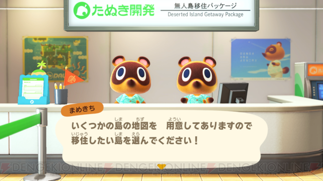
好きな見た目にキャラメイクして、自然あふれる無人島での生活がスタート！
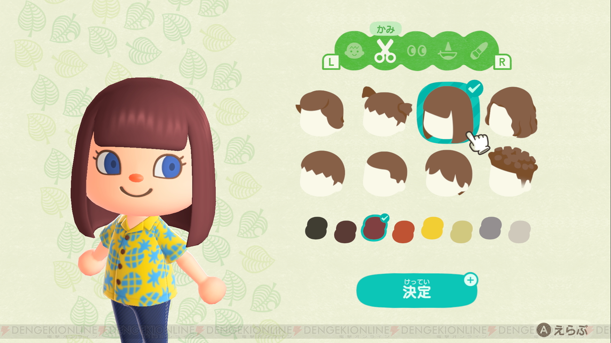
村のどうぶつたちと交流したり、季節行事へ参加したり、気ままなスローライフが楽しめます。
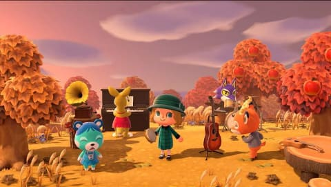
また、友人とオンライン通信で一緒に遊ぶこともできます。
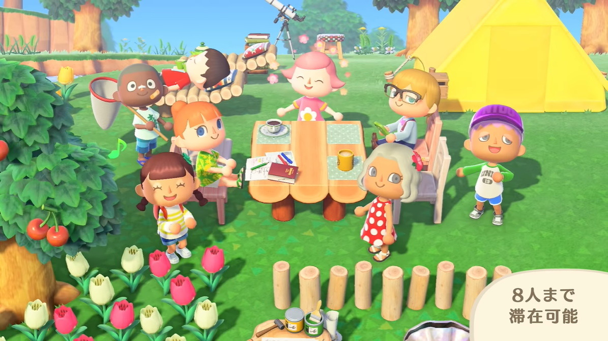
やり込み要素が盛りだくさん！
金の道具シリーズを集める
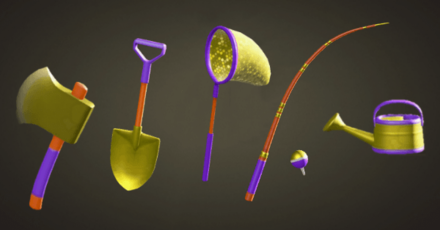
さかなをコンプリートする
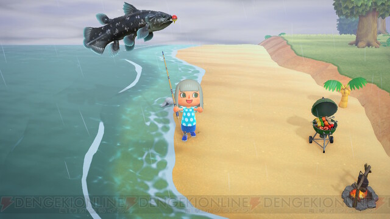
むしをコンプリートする
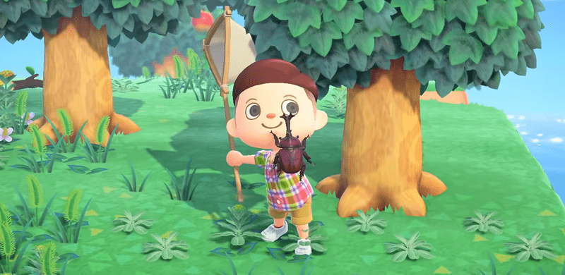
化石をコンプリートする
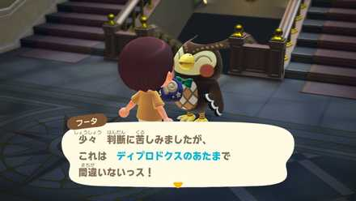
家具とDIYを集める
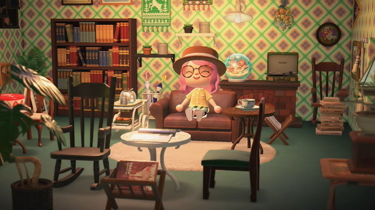
収集系やりこみ要素として、金の道具を集めることがあげられます。今作はDIYで金の道具を作れるようになるので、金の道具のDIYを手に入れたら、友達に作ってあげてみてはどうでしょう
『どうぶつの森』シリーズの最もオーソドックスなやりこみ要素に、魚のコンプリートがあります。今作は80匹の魚が出現し、入手難易度の高い魚が散見しますので、コンプリートするにはかなりの労力が必要です。全てのさかなを集めると、金のつりざおのレシピをゲットすることができます。
虫のコンプリートも、『どうぶつの森』シリーズのオーソドックスなやりこみ要素の一つです。魚と同様に虫も全部で80匹出現し、入手難易度の高い虫が存在しています。さかなと同様、全てのむしを集めると、金のあみのレシピをゲットすることができます。
化石は1日に掘ることができる量が制限されていますので、毎日忘れずに掘る必要があります。種類も多いですので、コツコツと集めていきましょう。
好みの部屋を作るための家具集めも、クリア後のやりこみ要素の一つです。今作ではDIYが加わったため、風船や砂浜のメッセージボトルなどでレシピを集めて家具を作成する方法が主になります。もちろん、商店で購入できるものもありますので、家具の種類は非常に多く狙ったものを作って思い通りの部屋にするにはかなりの労力が必要です。
クリア後に極めたい事
マイデザイン職員になる
島メロ職人になる
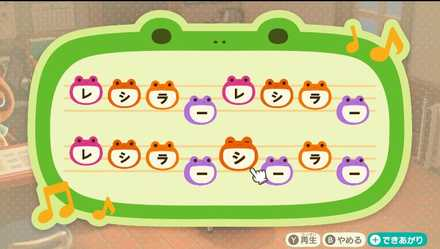

マイデザインとは、自分だけの衣装などをデザインすることができます
また、オンライン上で他のプレーヤーに自分のマイデザインを共有することができます。

住民に話しかけた時や時報として流れる島メロを、自分で作成した独自のものに変更することができます。自分の好きなメロディーを島で流しましょう！
今作からの新要素！！
。島では、自然と触れ合えるというだけでなく、新たにDIY（Do It Yourself）で家具を作ることが可能に。DIYをして道具を作成すると新しい素材が入手できるほか、島のレイアウトを自由に変更できる。
- このレシピはメッセージボトルを拾ったり住民から教わることでゲットすることができます。
本作では、島を発展させていくと地面を削ったり崖にしたり、逆に土を盛ってなだらかな坂を作ったり、地形の変更を行う「島クリエイト」ができるようになりました。この機能は、「あつまれ どうぶつの森」の目玉機能と言っても差し支えなく、島クリエイトを使えるか使えないかで、このゲームの自由度が大幅に違います。
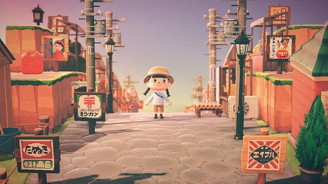
上手く使えばこんなレトロな商店街を作ることもできます。ぜひやってみてください。
DIY
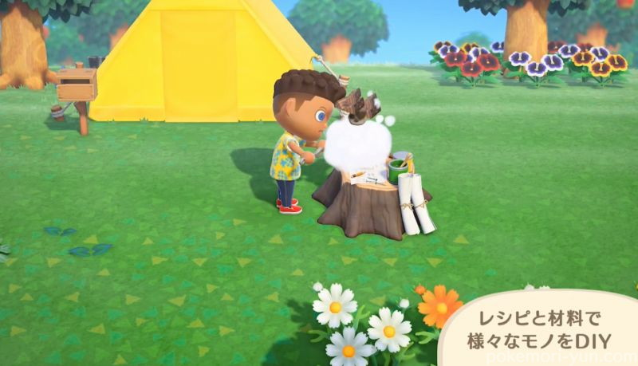